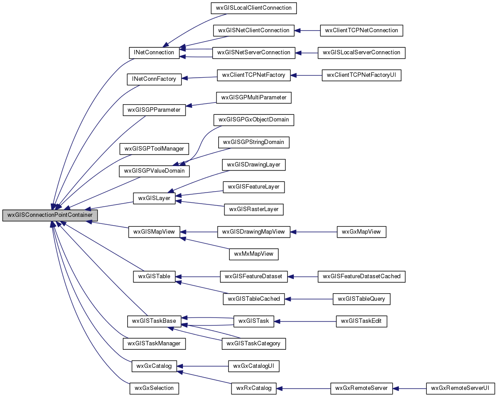

|
|
Version: 0.6.0 |


wxGISConnectionPointContainer Class Reference
#include <pointer.h>
Inheritance diagram for wxGISConnectionPointContainer:

Public Member Functions | |
| virtual long | Advise (wxEvtHandler *pEvtHandler) |
| virtual void | Unadvise (long nCookie) |
Protected Member Functions | |
| virtual void | AddEvent (const wxEvent &event) |
| virtual void | PostEvent (wxEvent *event) |
Protected Attributes | |
| wxVector< wxEvtHandler * > | m_pPointsArray |
| wxCriticalSection | m_CritSectEvt |
Detailed Description
The class for event connection store.
Library: wxGISCore
The documentation for this class was generated from the following files:
- /home/bishop/work/projects/nextgismanager/include/wxgis/core/pointer.h
- /home/bishop/work/projects/nextgismanager/src/core/pointer.cpp
- Generated on Fri Sep 26 2014 01:11:01 for ngm by
 1.8.6
1.8.6